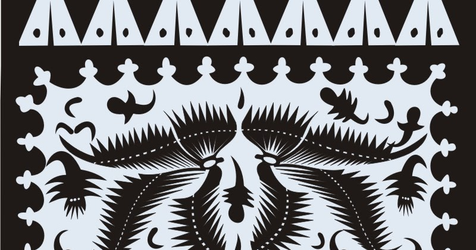

Batik Tuban atau yang juga dikenal sebagai batik gedog adalah batik khas dari masyarakat Tuban yang dibuat dengan cara ditenun, motif batik ini berbentuk kotak-kotak atau garis hitam putih. Batik Tuban dinamakan sebagai batik gedog karena dalam proses pembuatannya yang mana kapas akan dipintal menjadi benang kemudian dianyam menjadi kain menggunakan alat manual yang mengeluarkan bunyi ‘dog dog’. Dari suara itulah kemudian masyarakat Tuban menamai batik tersebut sebagai batik gedog. Pembuatan batik ini berada di Kecamatan Kerek, Kabupaten Tuban.
Berikut adalah beberapa informasi tentang Batik Tuban:
1. Motif Beragam: Batik Tuban memiliki beragam motif, mulai dari motif-motif geometris yang rumit hingga motif-motif yang terinspirasi dari alam, tumbuhan, hewan, mitologi, sejarah, atau kehidupan sehari-hari. Motif-motif ini sering kali diatur dengan detail dan kompleksitas yang tinggi.
2. Proses Pembuatan yang Tradisional : Proses pembuatan batik ini biasanya membutuhkan waktu selama 3 bulan untuk proses memintal, menenun, membatik, dan mewarnai. Batik Tuban juga melibatkan teknik tradisional, di mana lilin panas diterapkan pada kain menggunakan alat bernama canting untuk membuat motif-motif yang diinginkan. Teknik ini memungkinkan pembuatan motif-motif yang rumit dengan tingkat detail yang tinggi.
3. Penggunaan Warna Tertentu : Penggunaan warna pada batik gedog sendiri menggunakan warna yang alami dari pohon nila, mengkudu, dan akar pohon mangga.
4. Palet Warna Tertutup : Batik Tuban cenderung menggunakan warna-warna yang lebih netral atau tertutup, seperti cokelat, hijau tua, biru tua, memberikan kesan klasik pada karya batik ini.
5. Keterkaitan dengan Sejarah dan Budaya Lokal: Motif-motif Batik Tuban sering kali mengandung makna filosofis, historis, atau terkait dengan kearifan lokal dan kehidupan masyarakat Tuban.
Penggunaan dalam Mode dan Seni: Selain digunakan dalam pakaian tradisional, Batik Tuban juga diaplikasikan dalam busana modern dan menjadi bagian dari seni serta kerajinan lokal di Tuban.
Pembuatan batik biasanya dilakukan oleh masyarakat ketika sedang menunggu masa bercocok tanam. Motif titik-titik pada batik gedog melambangkan kosmologi pada Jawa-Hindu yaitu kiblat papat lima pancer. Keunikan motif dan nilai-nilai budayanya memberikan kontribusi besar terhadap keberagaman budaya Indonesia dan menjadikan Batik Tuban sebagai simbol kekayaan seni tradisional Indonesia.